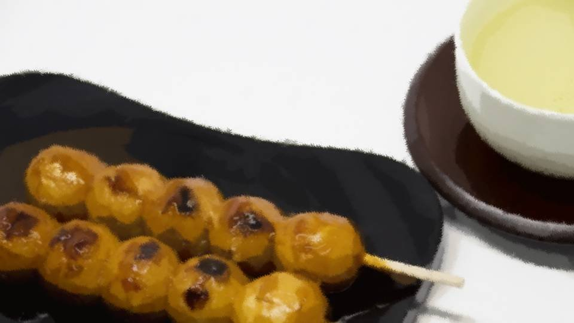

Script 000021A5
祀耀729年三月、ある客がやってきた。

その者は立派な自動車に乗っていた。
そのような者が突然現れたものだから、住人たちも騒ぎ出す。
ただでさえ部外者に対して警戒心の強い住人たち。
家の窓からその様子を見ていたが、どうやらこちらに向かっているようだ。
そのような者が突然現れたものだから、住人たちも騒ぎ出す。
ただでさえ部外者に対して警戒心の強い住人たち。
家の窓からその様子を見ていたが、どうやらこちらに向かっているようだ。
「失礼します！」
その者は、新村家の戸を開け、そう叫んだ。
「どちらさまでしょうか？」
65歳になった私は、平静を装い対応する。
その者は、新村家の戸を開け、そう叫んだ。
「どちらさまでしょうか？」
65歳になった私は、平静を装い対応する。
この者のピンと伸びた背筋に、引き締まった表情。
30代半ばといったところだろうか。
敬礼の後、静かに姿勢を崩す。
最大限の礼を尽くしているように見えた。
30代半ばといったところだろうか。
敬礼の後、静かに姿勢を崩す。
最大限の礼を尽くしているように見えた。

「私は政府より派遣されました、篠崎ハジメと申します！
この集落の代表の方にお話があり、東京より参上しました！」
政府……？ その者が、一体何の用だろうか。
政府……？ その者が、一体何の用だろうか。
多少の警戒心はあったものの、1人ではるばる東京からやってきたのであれば、無下に追い払うわけにもいかない。
「どうぞ、お入りください」
開いた戸の向こう――新村家の垣根から、住人たちが不審そうに篠崎さんを凝視する。
もし篠崎さんがおかしな真似をすれば――。
そのような状況も手伝い、私は招き入れることにしたのだ。
開いた戸の向こう――新村家の垣根から、住人たちが不審そうに篠崎さんを凝視する。
もし篠崎さんがおかしな真似をすれば――。
そのような状況も手伝い、私は招き入れることにしたのだ。
私は茶と菓子を差し出した。

「ああ、これは恐れ入ります」
篠崎さんは遠慮することなく、茶と菓子を味わう。
車とはいえこの寒空の中、遠くからやって来たとなれば腹も減るだろう。
篠崎さんは遠慮することなく、茶と菓子を味わう。
車とはいえこの寒空の中、遠くからやって来たとなれば腹も減るだろう。
「この集落の代表である新村桔梗です。
どういった用件でしょうか」
篠崎さんが茶を飲み干す時分を見計らい、話を切り出す。
と、篠崎さんはカバンから1枚の紙を取り出した。
どうやら古い書簡のようだ。
篠崎さんが茶を飲み干す時分を見計らい、話を切り出す。
と、篠崎さんはカバンから1枚の紙を取り出した。
どうやら古い書簡のようだ。
篠崎さんは無言で書簡を広げ、私の前に差し出す。
私は辺境の地、荒田から参りました。
という書き出し。
そして最後には『荒田集落代表 新村晃』との署名。
という書き出し。
そして最後には『荒田集落代表 新村晃』との署名。
晃さんの書簡！？
晃さんと初めて出会った日のこと、川で話したこと、結婚の儀、そして―― 死んでしまったこと。
それらがふっと、1度に押し寄せてくる。
しばし、その書簡を眺めていた。
晃さんと初めて出会った日のこと、川で話したこと、結婚の儀、そして―― 死んでしまったこと。
それらがふっと、1度に押し寄せてくる。
しばし、その書簡を眺めていた。
「今こそ、この薬が国の役に立つのではないかと思い、参上いたしました」


篠崎さんのその声で我に返る。
同時に、私がここへ嫁いだ目的を思い出す。
もちろん、晃さんというかけがえのない人と一緒にいたい気持ちが1番だった。
だがもう1つは、ドローガや呪殺の正体をつきとめることだ。
同時に、私がここへ嫁いだ目的を思い出す。
もちろん、晃さんというかけがえのない人と一緒にいたい気持ちが1番だった。
だがもう1つは、ドローガや呪殺の正体をつきとめることだ。
今になって思う。
なぜ晃さんやお義母さんは自殺したのだろうか。
本当に自殺だったのだろうか。
それとも……。
なぜ晃さんやお義母さんは自殺したのだろうか。
本当に自殺だったのだろうか。
それとも……。
私も老いを実感する身。
その目的を忘れ、みんなの安全を第一に考えていた。
しかし、この集落がドローガとともにある限り、その安全はまやかしなのではないか。
そのようなことは、時々ふと思ったものだ。
その目的を忘れ、みんなの安全を第一に考えていた。
しかし、この集落がドローガとともにある限り、その安全はまやかしなのではないか。
そのようなことは、時々ふと思ったものだ。
だがこの年齢になり、本当にこのままでいいのだろうか、と疑問を持つようになった。
「篠崎さん、つまり、ここの桜が欲しいということですか？」
「話が早くて助かります。どうか、協力していただきたい」
「そのために、わざわざ東京から？」
「………… おっしゃる通りです」
「飯沢県に来られたことはありますか？」
「………… いえ、今回が初めてです」
「話が早くて助かります。どうか、協力していただきたい」
「そのために、わざわざ東京から？」
「………… おっしゃる通りです」
「飯沢県に来られたことはありますか？」
「………… いえ、今回が初めてです」
私はこの時、篠崎さんの嘘を見抜いた。
この人は東京からやってきた人ではない。
なぜなら、訛りが飯沢県の話し方だからだ。
もともと東京出身である私にはすぐに分かる。
この人は東京からやってきた人ではない。
なぜなら、訛りが飯沢県の話し方だからだ。
もともと東京出身である私にはすぐに分かる。
――しばし沈黙。
「今もこの薬は使われているのですか？」
「いえ、もうそのようなことはないはずです」
「そうですか……」
私も嘘をついた。
今でもドローガは使われている。
「今もこの薬は使われているのですか？」
「いえ、もうそのようなことはないはずです」
「そうですか……」
私も嘘をついた。
今でもドローガは使われている。
しかしこの人の目的が見えない。
飯沢県の者が政府と嘘をついてまで桜を欲しがる理由とは。
飯沢県の者が政府と嘘をついてまで桜を欲しがる理由とは。
「どうでしょう、ここの桜を……」
「どれくらい必要なのですか？」
「可能であれば、できるだけたくさんいただきたく」
「どうやってたくさんの桜を運ぶのですか？ まさか、荒田のみんなに運ばせる気ですか？」
「どれくらい必要なのですか？」
「可能であれば、できるだけたくさんいただきたく」
「どうやってたくさんの桜を運ぶのですか？ まさか、荒田のみんなに運ばせる気ですか？」
「ま、まさか！ そんなつもりは毛頭ありません！
ご提供いただける数にもよりますが、鉄道の建設も考えています」
「鉄道？」
「はい。1本だろうが千本だろうが、伐採から運搬まで、全て我々が行います」
妙な話だ。
鉄道建設なんて、本当に国でもなければ資金捻出はできないはず。
「鉄道？」
「はい。1本だろうが千本だろうが、伐採から運搬まで、全て我々が行います」
妙な話だ。
鉄道建設なんて、本当に国でもなければ資金捻出はできないはず。
「もちろん、ドローガを科学的に分析するわけですよね？」
「はい。それは必ず」
「………… 好きなだけ持って行って構いません」
「ほ、本当ですか！？」
「ただし、条件があります」
「何でしょう……？」
「はい。それは必ず」
「………… 好きなだけ持って行って構いません」
「ほ、本当ですか！？」
「ただし、条件があります」
「何でしょう……？」
私が出した条件――。
・新村本家の桜だけは残しておくこと
・研究結果をこの集落に、文書をもって開示すること
この2つだ。
さすがに全ての桜を手放すのは気が引けた。
結局この男の正体は不明だが、ドローガの科学的分析をするなら、知りたいと思っていた真実―― そして、この集落を本当の意味で守り続ける方法が分かるはず。
・新村本家の桜だけは残しておくこと
・研究結果をこの集落に、文書をもって開示すること
この2つだ。
さすがに全ての桜を手放すのは気が引けた。
結局この男の正体は不明だが、ドローガの科学的分析をするなら、知りたいと思っていた真実―― そして、この集落を本当の意味で守り続ける方法が分かるはず。